Build in 48 hours.Run it in one.
One platform for teams, judges and organisers: applications, team formation, submissions, scoring and the follow-up, built by people who run hackathons.

One event, three seats at the table.
Participants build, judges decide, organisers keep it running. Each gets a view that shows only what matters to them.
Forty-eight hours, one place for all of it.
Form a team, pick a challenge, submit a repo and a demo. Everything you need to hand in is one page, and the clock is always visible.
- Team formation with open roles
- Submissions with repo, deck and video links
- Schedule, mentors and rooms in one view
Score what you saw, while you still remember it.
A judging queue per track, one submission at a time, with the rubric next to the demo. Scores sync live; the ranking builds itself.
- Rubrics with weighted criteria
- Conflict-of-interest flags
- Live leaderboard for organisers only
Run the event from one console.
Applications, check-in, tracks, sponsors and the CRM behind them. Export everything, automate the rest, keep your weekend.
- Applications and check-in with QR codes
- Sponsor challenges and prize tracks
- Connected to the Manage and More CRM
Everything a hackathon needs. Nothing it doesn't.
Opinionated defaults, so an event is set up in an afternoon, with the escape hatches an experienced team wants.
Applications & check-in
Review applications in one queue, accept in batches, check people in with a QR code at the door.
Submissions
One page per team: repo, demo, deck and a short write-up. Locked at the deadline, to the second.
Tracks & stages
Sponsor challenges, prize tracks and pitch slots. Teams move through stages; nobody waits in the wrong room.
Mentors & schedule
A schedule that updates live, mentor office hours teams can book, and rooms that know who is in them.
Judging & scoring
Weighted rubrics, per-track queues, conflict flags, and a ranking that builds itself as scores arrive.
Afterwards
Winners, certificates and the contacts, pushed into the CRM so the follow-up with teams and sponsors actually happens.
Built on events we actually ran.
The numbers from the last two seasons, straight from the platform.
Check-in rate
Participants who checked in at the door against those accepted.
94 %
Judging time
Judges score five times faster than with the spreadsheet we used before.
5 x
Quiet by default, blue when it acts
Every number has a place to go. Open the full analytics for any event you organise.
- hackathons run on it
- 12hackathons run on it
- participants checked in
- 2,400 +participants checked in
- from submission to judging queue
- < 1 minfrom submission to judging queue
Applications for the Munich Hackathon close on 14 November.
Two days, six sponsor challenges, two hundred builders. Judges and mentors can sign up through the same page.
Apply as a participantBefore you ask.
Short answers. For the long ones, read the docs
Can we use it for our own hackathon?
Yes. Organisers create an event, set tracks and rubrics, and invite their team. Pricing is per event, free for student-run events.
Does it work without the Manage and More CRM?
It does. The CRM connection is optional and adds the follow-up: contacts, sponsors and teams land in your pipeline after the event.
What do judges need to install?
Nothing. Judges get a link, sign in with their e-mail and score on any device.
Where is the data hosted?
In the EU, on infrastructure operated by UnternehmerTUM. Events can be exported and deleted at any time.